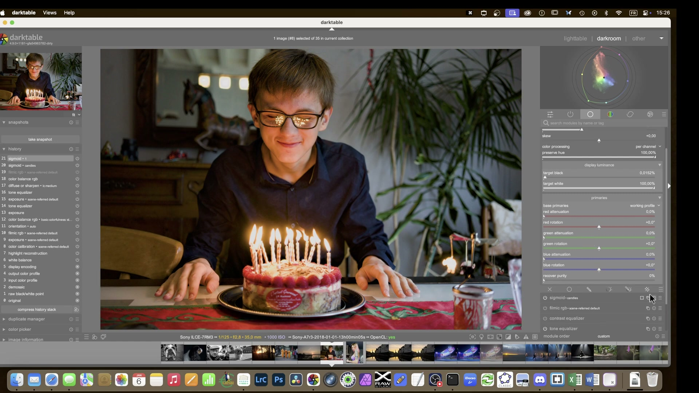
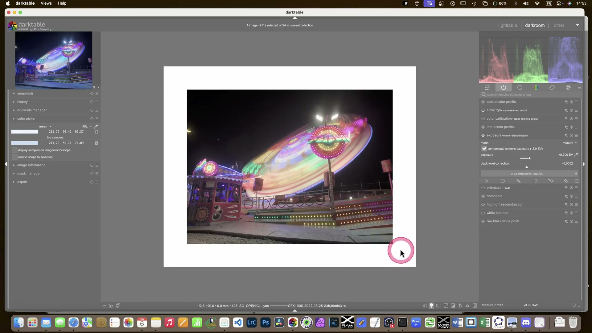
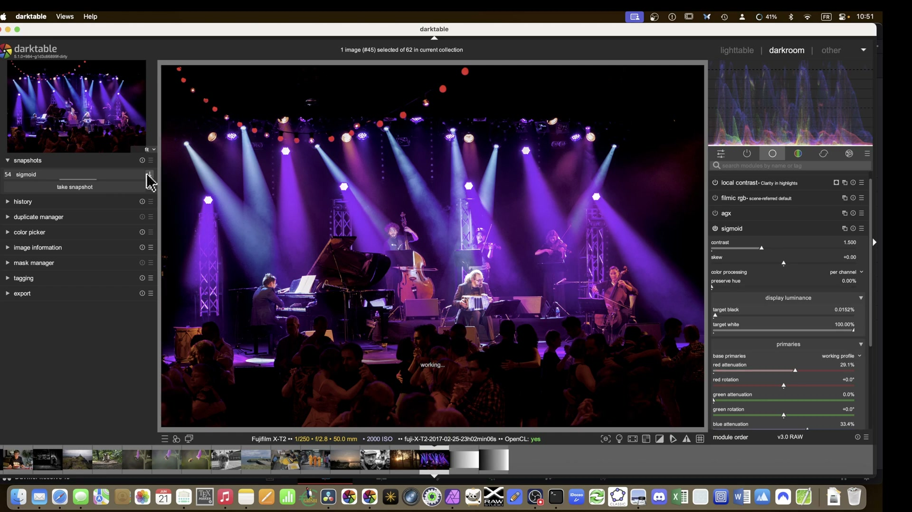
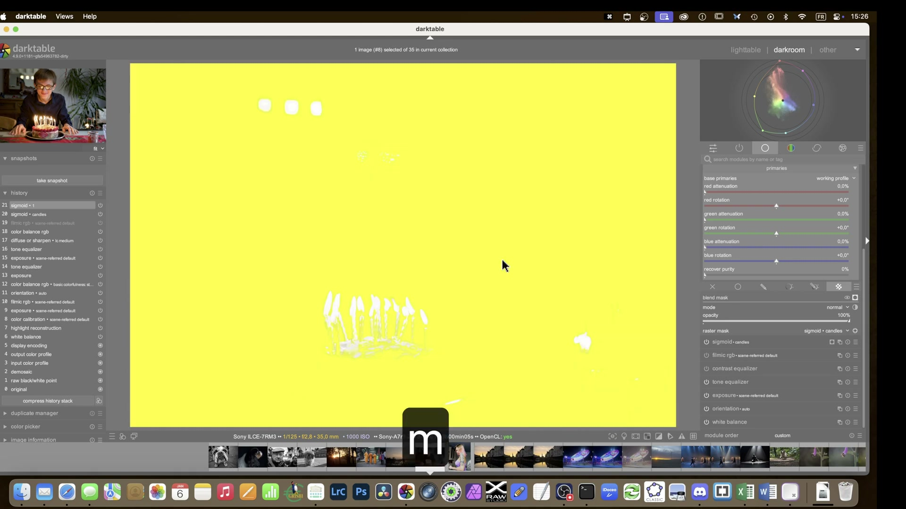
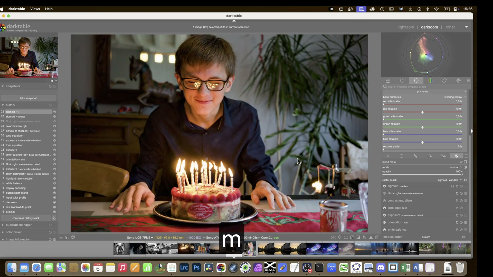

Tone Mapping: Sigmoid¶
Il modulo sigmoid è un tone mapper basato su una curva log-logistica generalizzata, progettato per mappare la gamma dinamica scene-referred (illimitata) nel range limitato del display (0–100%) senza introdurre shift cromatici indesiderati1. È uno dei tre moduli principali di compressione tonale in darktable — insieme a filmic rgb e agx — e rimane particolarmente apprezzato per la sua semplicità, prevedibilità e controllo fine sulle transizioni tonali, specialmente in ritratti e immagini con ampie zone di pelle o cielo uniforme34.

Sigmoid è un modulo display transform
Sigmoid opera nella fase display-referred della pipeline: tutti i moduli posti prima di sigmoid lavorano in spazio scene-referred (dati RAW non compressi); tutti quelli dopo operano su dati già mappati al display. Non va mai usato insieme a filmic rgb o base curve1.
Panoramica¶
Sigmoid applica una curva S modificata (sigmoidale) per comprimere la luminanza, con due parametri fondamentali che ne definiscono il comportamento:
- Contrast: regola la pendenza centrale della curva, determinando l’impatto visivo del contrasto globale senza spostare i punti di nero/bianco.
- Skew: sposta il baricentro della curva verso le luci (valori positivi) o le ombre (valori negativi), consentendo di trasferire contrasto da una zona all’altra senza alterare il contrasto al grigio medio12.
A differenza di filmic rgb, sigmoid non include controlli nativi per la gestione della saturazione o del gamut: la conservazione del colore avviene principalmente attraverso la scelta della modalità di elaborazione (per channel vs rgb ratio) e l’opzione preserve hue1. Questo lo rende più “puro” come strumento di mappatura tonale, ma richiede un’integrazione consapevole con moduli successivi come color balance rgb o color calibration per la gestione cromatica.
Flusso di lavoro consigliato¶
Il flusso ottimale con sigmoid segue rigorosamente la gerarchia della pipeline scene-referred1:
1. Esposizione (modulo exposure)
|
2. Bilanciamento colore (color balance rgb / color calibration)
|
3. Sigmoid -- compressione tonale
|
4. Regolazioni finali (sharpening, local contrast, etc.)
Regola d'oro: esponi prima, mappa dopo
Sigmoid non recupera informazioni perse. L’esposizione deve essere corretta prima di attivare sigmoid: il modulo presuppone che i dati in ingresso siano già bilanciati e correttamente esposti12.
Passo 1: Impostazione del grigio medio¶
Prima di toccare sigmoid, usa il modulo exposure per portare un’area neutra dell’immagine (es. una superficie grigia al 18%) al valore di luminanza corrispondente. Il metodo più affidabile è:
- Attiva lo strumento
area picker(icona del rettangolo nel moduloexposure) - Seleziona un’area rappresentativa del grigio medio (non troppo chiara né troppo scura)
- Clicca su “set middle gray” → darktable regolerà automaticamente
exposureper portare quel punto a ~50% L (LCh) o 18% riflettanza2.

Passo 2: Contrasto¶
Il parametro Contrast agisce sulla pendenza della regione lineare centrale della curva sigmoidale1:
- Default:
1.00 - Range tipico:
0.70 – 2.00 - Valore comune per paesaggi:
1.30 – 1.60 - Valore comune per ritratti:
0.90 – 1.20(evita transizioni troppo marcate sulla pelle)1
Contrasto > 1.80 richiede attenzione
Valori superiori a 1.80 possono causare posterizzazione nelle ombre e perdita di dettaglio nelle luci, specialmente se combinati con skew elevato1.
Passo 3: Skew¶
Il parametro Skew controlla l’asimmetria della curva: sposta il punto di massimo contrasto lungo l’asse delle esposizioni12.
| Valore | Effetto pratico | Uso tipico |
|---|---|---|
0.00 |
Curva simmetrica, massimo contrasto al grigio medio | Default, immagini bilanciate |
+0.30 |
Contrasto spostato verso le luci; ombre più morbide, luci più incisive | Paesaggi con cieli brillanti o soggetti retroilluminati |
-0.25 |
Contrasto spostato verso le ombre; luci più dolci, ombre più definite | Ritratti in luce soffusa, interni con dettagli nelle ombre |
Skew > +0.50 o < -0.40 è sconsigliato per ritratti
Valori estremi creano transizioni dure nella pelle e possono generare artefatti cromatici (es. viraggio giallo-arancio nei rossi saturi) quando preserve hue è disattivato1.
Parametri principali¶
| Parametro | Range | Default | Descrizione |
|---|---|---|---|
| Contrast | 0.10 – 5.00 |
1.00 |
Pendenza della curva nella regione centrale. Aumenta il contrasto globale senza spostare i punti di nero/bianco1. |
| Skew | -1.00 – +1.00 |
0.00 |
Asimmetria della curva. Valori positivi accentuano le luci; valori negativi enfatizzano le ombre1. |
| Color processing | per channel, rgb ratio |
per channel |
Modalità di applicazione della curva: per channel agisce su RGB separatamente (più potente, ma può alterare l’Hue); rgb ratio mantiene i rapporti RGB (preserva meglio il colore, ma meno flessibile)1. |
Preserve hue (solo in per channel) |
0% – 100% |
100% |
Livello di conservazione della tonalità spettrale. 100% ≈ comportamento di rgb ratio; 0% = massima distorsione cromatica (utile per effetti “caldi” in tramonti)1. |
| Target black | 0.00 – 0.10 |
0.00 |
Valore minimo di output (nero). Di solito lasciato a 0.00. Valori > 0.01 producono un effetto “faded”1. |
| Target white | 0.90 – 1.10 |
1.00 |
Valore massimo di output (bianco). 1.00 = bianco puro. Valori < 0.98 evitano clipping cromatico in luci intense1. |

Parametri avanzati: Primaries¶
Espandendo la sezione Primaries, si accede a controlli specifici per la gestione cromatica prima della mappatura tonale — analoghi a quelli presenti in filmic rgb e agx, ma con finalità più tecniche1.
| Parametro | Funzione | Valore tipico | Fonte |
|---|---|---|---|
| Red/Green/Blue attenuation | Riduce la purezza dei canali primari prima della curva sigmoidale. Evita clipping cromatico e posterizzazione in aree molto luminose (es. LED blu, luci al neon)1. | Red: 10–30%, Green: 0–10%, Blue: 20–60% |
1 |
| Red/Green/Blue rotation | Ruota leggermente la tonalità del canale prima della compressione. Utile per correggere dominanti residue o per affinare il look finale1. | ±0.5° – ±2.0° |
1 |
| Recover purity | Ripristina parzialmente la purezza persa dall’attenuazione. 100% = ripristino completo; 0% = nessun ripristino (output garantito entro il gamut delle primaries scelte)1. |
40% – 80% |
1 |
Perché attenuare prima della curva?
I colori puri e luminosi tendono a uscire dal gamut del display durante la compressione. Attenuandoli prima, li si porta in uno spazio sicuro dove sigmoid può gestirli senza clipping o rotazioni indesiderate dell’Hue1.
Gestione del colore con Sigmoid¶
Sigmoid offre due approcci distinti alla conservazione cromatica, selezionabili tramite Color processing:
Modalità rgb ratio¶
- Applica la stessa curva sigmoidale a tutti e tre i canali RGB in proporzione, mantenendo costanti i rapporti tra R, G e B.
- Risultato: i colori spettrali (es. un rosso puro) rimangono sulla stessa linea cromatica fino al bianco — desaturazione prevedibile e coerente1.
- Vantaggio: zero hue shift, ideale per immagini tecniche o con colori critici (es. prodotti, architettura).
- Svantaggio: minore flessibilità creativa; luci molto intense possono apparire “lavate”.
Modalità per channel + preserve hue¶
- Applica curve sigmoidali indipendenti a ciascun canale RGB.
- Con
preserve huea100%: simulargb ratioma con maggiore stabilità numerica. - Con
preserve huea0–50%: introduce una distorsione controllata dell’Hue — i rossi diventano arancioni, i blu diventano ciano, i verdi diventano gialli1. - Uso tipico: effetti “cinematografici”, tramonti caldi, luci notturne con dominanti artistiche4.
Consigli operativi¶
- Non usare sigmoid insieme ad altri display transforms: disattiva
filmic rgbobase curveprima di abilitare sigmoid1. - Per immagini con alta frequenza cromatica (es. LED, vetrine): usa
per channel+red/blue attenuation(20–40%) +recover purity(50–70%) per evitare banding e posterizzazione1. - Per ritratti: preferisci
skew = -0.10a-0.25econtrast = 0.95–1.15. Evitaskew > +0.15per non accentuare pori o venature1. - Per paesaggi con cieli intensi: usa
skew = +0.25–+0.40etarget white = 0.97–0.99per preservare dettagli senza clipping4. - Calibrazione monitor: sigmoid è sensibile alla gamma del display. Assicurati di usare un profilo ICC corretto e una gamma di riferimento 2.21.
Esempio: Calibrazione del grigio medio con area picker¶
Da Filmic and Sigmoid (Part 3) (00:52)
1. Apri un’immagine con una superficie neutra ben illuminata (es. carta grigia 18%).
2. Nel modulo exposure, clicca sull’icona del rettangolo (area picker).
3. Disegna un rettangolo di ~100×100 pixel su un’area omogenea e neutra.
4. Clicca su “set middle gray”: darktable imposta automaticamente exposure per portare la media LCh a L ≈ 49.5–50.52.
5. Verifica con il color picker in modalità LCh: il valore L dovrebbe essere compreso tra 49.0 e 51.02.
Esempio: Correzione di luci LED con attenuazione primaria¶
Da Filmic & Sigmoid Part 4 (13:15)
1. Attiva la sezione Primaries in sigmoid e seleziona per channel.
2. Imposta blue attenuation = 42%, red attenuation = 27%, green attenuation = 5%.
3. Regola recover purity = 63% per bilanciare saturazione e gamut.
4. Usa blue rotation = +0.8° per compensare un leggero viraggio ciano nelle luci al neon3.
5. Conferma con l’istogramma RGB: i picchi nei canali primari devono essere smorzati, senza tagli netti a destra3.
Esempio: Workflow per ritratto in luce soffusa¶
Da Filmic and Sigmoid (Part 3) (10:45)
1. Usa exposure per impostare il grigio medio della pelle a L = 52.3 (leggermente chiaro per un look “luminoso”).
2. Imposta sigmoid → Contrast = 0.98, Skew = -0.18 per preservare i dettagli nelle ombre del viso.
3. Seleziona Color processing = per channel e Preserve hue = 92% per minimizzare shift cromatici.
4. Nella sezione Primaries, imposta red attenuation = 18%, blue attenuation = 31%, recover purity = 58% per gestire luci da finestra bluastre2.
5. Verifica con il color picker: la tonalità della pelle (H in HSL) deve rimanere stabile tra 25° e 32° anche nelle zone più illuminate2.
Domande frequenti¶
Problema: Sigmoid produce banding su cieli uniformi¶
Questo fenomeno è tipico quando Contrast > 1.70 e Skew > +0.35 sono combinati senza attenuazione. La soluzione è ridurre la pendenza centrale (Contrast ≤ 1.45) e applicare blue attenuation = 35–45% prima della curva, seguita da recover purity = 50–60%1.
Problema: Le alte luci appaiono “lavate” in modalità rgb ratio¶
In rgb ratio, la desaturazione è forzata lungo linee spettrali, il che può causare una perdita percettiva di “brillantezza”. Per recuperare vivacità, aggiungi un livello di sharpen con radius = 1.2, strength = 18%, e maschera basata su lightness con threshold = 0.751.
Problema: Preserve hue = 100% non impedisce shift nei rossi saturi¶
Ciò accade perché preserve hue opera solo in spazio RGB e non compensa le interazioni cromatiche non lineari alle alte luminanze. La soluzione è attivare red attenuation = 25% + red rotation = -0.6° nella sezione Primaries per stabilizzare la traiettoria cromatica1.
Preset integrati¶
darktable 5.4 include preset preconfigurati per sigmoid, accessibili dal menu a tendina in alto a destra del modulo. I preset sono progettati per workflow specifici e funzionano indipendentemente dalla scelta di Color processing1.
| Preset | Quando usarlo | Note |
|---|---|---|
| smooth | Base per la maggior parte delle immagini (ritratti, paesaggi neutri) | Imposta Contrast = 1.00, Skew = 0.00, target white = 1.00, target black = 0.00, e primaries ottimizzati per una transizione morbida1. |
| high contrast | Immagini con forte impatto visivo (street photography, reportage) | Imposta Contrast = 1.65, Skew = +0.12, target white = 0.985, blue attenuation = 33%1. |
| portrait soft | Ritratti in luce diffusa o studio con fondale neutro | Imposta Contrast = 0.92, Skew = -0.22, preserve hue = 95%, red attenuation = 15%1. |
| neon lights | Scene notturne con luci artificiali intense (LED, insegne) | Imposta Contrast = 1.20, Skew = +0.38, red attenuation = 28%, blue attenuation = 52%, recover purity = 45%1. |
Come applicare un preset
Clicca sull'icona a forma di freccia verso il basso (▼) nell’angolo in alto a destra del modulo sigmoid. Seleziona il preset desiderato: i parametri verranno caricati immediatamente e applicati in tempo reale1.
Riferimenti visuali¶

Sigmoid · frame a 929s da video YouTube
Sigmoid · frame a 939s da video YouTubeRisorse aggiuntive¶
-
📘 Manuale ufficiale darktable 4.8 — Sigmoid
https://docs.darktable.org/usermanual/4.8/en/module-reference/processing-modules/sigmoid/
Documentazione tecnica completa, con descrizioni precise dei parametri e note sulla pipeline1. -
▶️ Filmic & Sigmoid Part 4 — Video tutorial (A Dabble in Photography)
https://www.youtube.com/watch?v=4KV9Ic-mPj0
Confronto diretto sigmoid vs filmic su immagini reali, con focus su gestione alte luci e curve tonali3. -
▶️ Filmic and Sigmoid (Part 3) — Video tutorial (A Dabble in Photography)
https://www.youtube.com/watch?v=LQHFOLAN028
Spiegazione teorica dicontrasteskew, con dimostrazioni pratiche su ritratti e paesaggi2. -
🌐 Comparaison du traitement avec filmique et sigmoid — darktable.fr
https://darktable.fr/posts/2023/01/comparaison-filmique-v5-sigmoid/
Analisi comparativa in francese, con esempi su 4 immagini RAW diverse4.
Fonti¶
-
darktable 4.8 user manual - sigmoid, https://docs.darktable.org/usermanual/4.8/en/module-reference/processing-modules/sigmoid/ ↩↩↩↩↩↩↩↩↩↩↩↩↩↩↩↩↩↩↩↩↩↩↩↩↩↩↩↩↩↩↩↩↩↩↩↩↩↩↩↩↩
-
[ENG] Filmic and Sigmoid (Part 3), https://www.youtube.com/watch?v=LQHFOLAN028 ↩↩↩↩↩↩↩↩↩
-
[ENG] Filmic & Sigmoid Part 4, https://www.youtube.com/watch?v=4KV9Ic-mPj0 ↩↩↩↩
-
[EN] Comparaison du traitement avec filmique V5 et sigmoid, https://darktable.fr/posts/2023/01/comparaison-filmique-v5-sigmoid/ ↩↩↩↩